Intip berbagai gaya rambut disini yukk
Untukmu Yang Punya Rambut Pendek ^_^ :3
Nah, kalau model yang ini merupakan model rambut pendek yang paling gak susah diatur dan cocok untuk kamu yang ingin terlihat lebih 'kalem'.
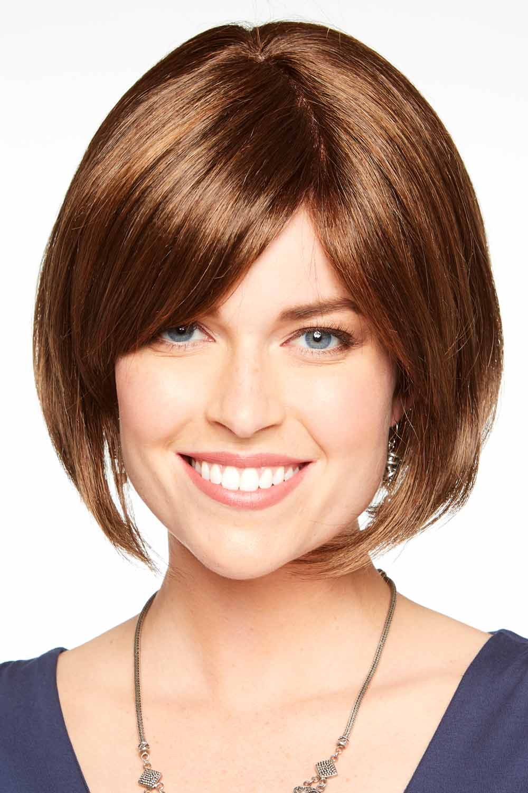
potongan gaya rambut dimana rambut bagian belakang tampak lebih pendek jika dibandingkan rambut bagian depan.Sehingga bisa memberikan kesan penampilan rambut yang bervolume dan juga di bagian ujung depannya dibiarkan lebih panjang.
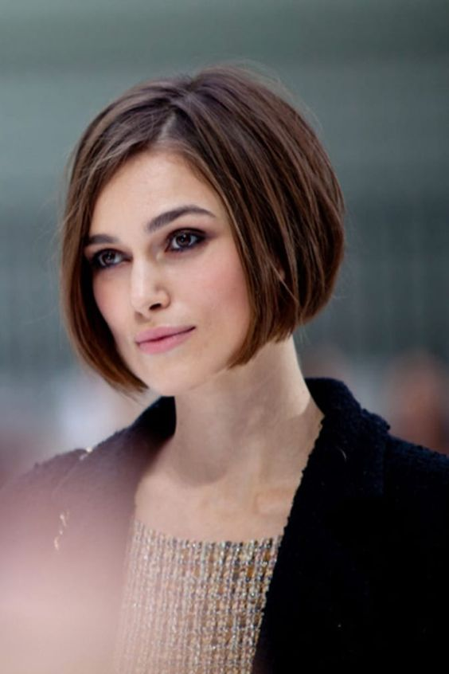
Gaya rambut bob umumnya tidak selalu "layer" tapi juga lurus dengan memberi sedikit kurva di ujung rambut.
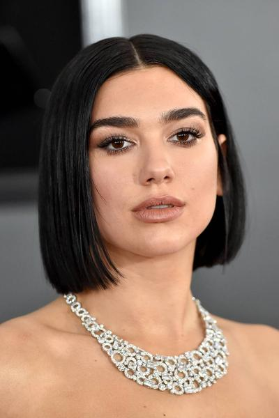
Potongan rambut yang pernah populer di tahun 1950-an ini kembali menjadi favorit. Selain relatif lebih mudah merawatnya, model rambut pendek juga cocok untuk kamu yang ingin serba praktis.
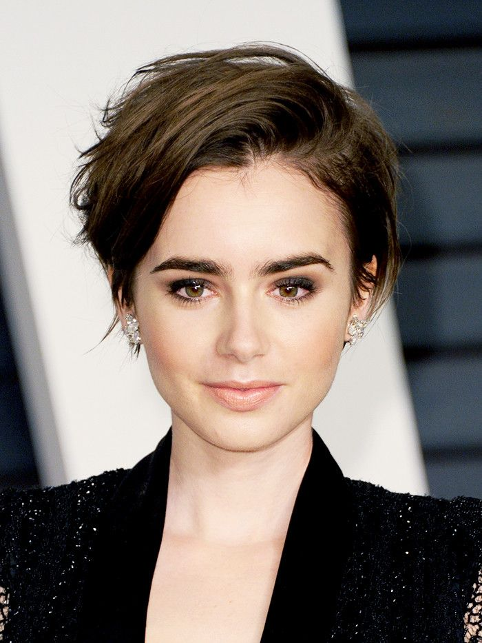
Senang dengan tampilan yang tidak terlalu rapi? Berarti gaya ini cocok untukmu! Cukup sisir dengan jari untuk mendapatkan tampilan yang messy,Aksen choppy sangat cocok kalau kamu ingin menata rambut dengan gaya beach waves yang trendy!.
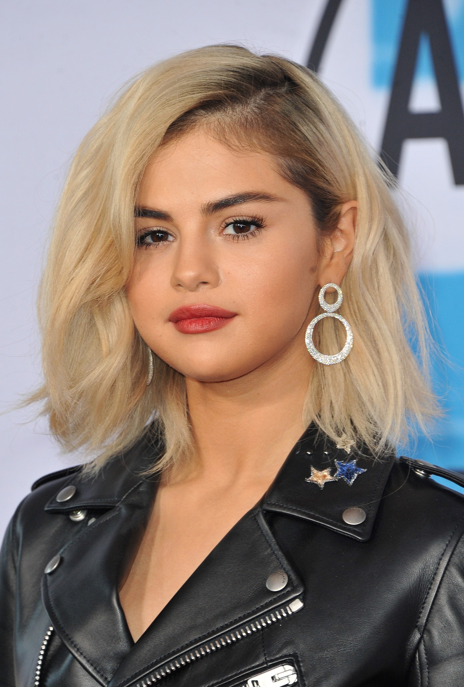
Kamu yang punya rambut keriting juga gak perlu takut untuk mencoba potongan pendek. Potongan rambut ini bakal membuat gayamu terlihat chic sekaligus unik!
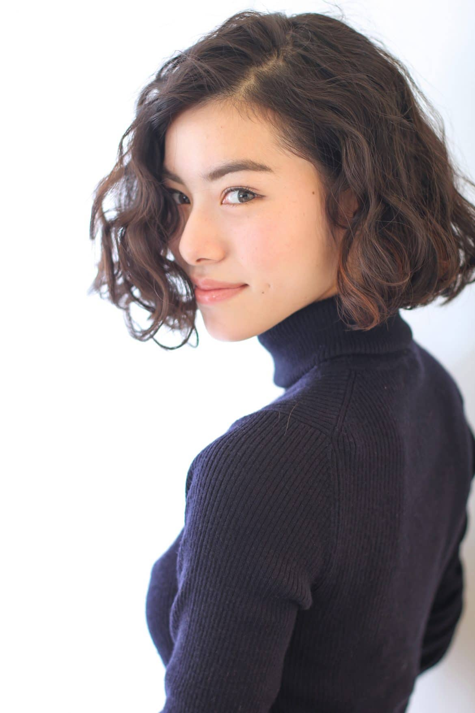
Model yang satu ini merupakan penggabungan antara bob dan undercut, dinamakan sci-fi bob karena bentuknya yang terkesan futuristik dan tajam. Berani coba model rambut yang unik satu ini?
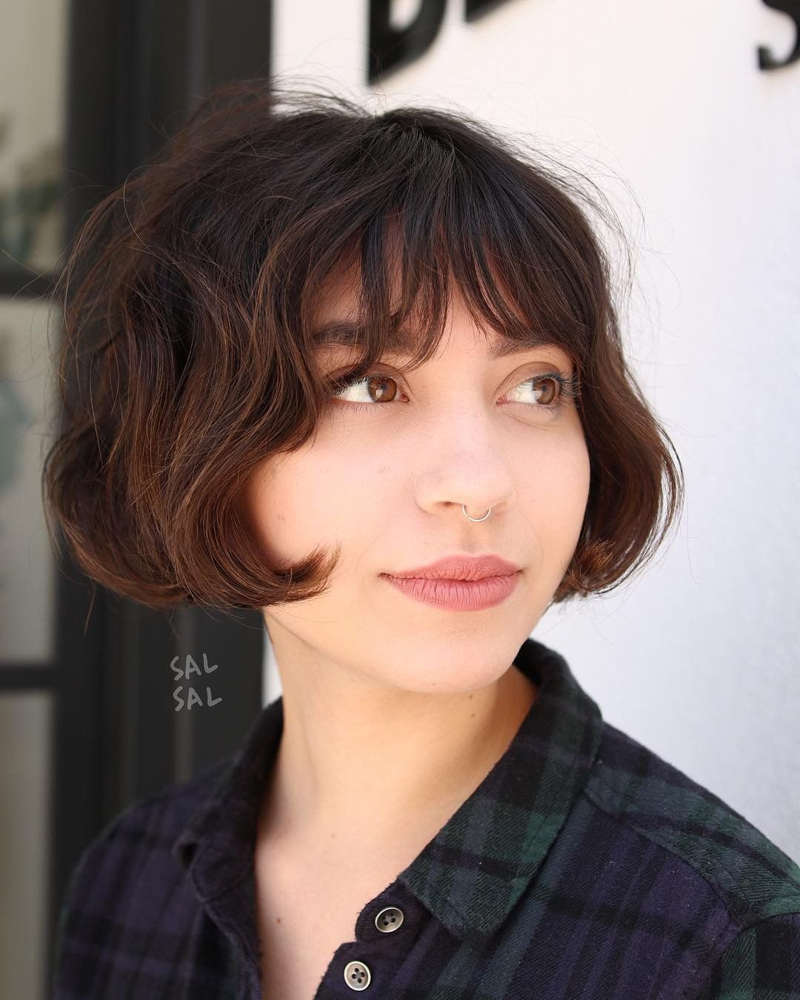
Model rambut wanita yang ini sama aja kok seperti model bob, cuma ditambahkan poni untuk memberi kesan 'tajam', ataupun manis. Sesuai dengan karakter wajah
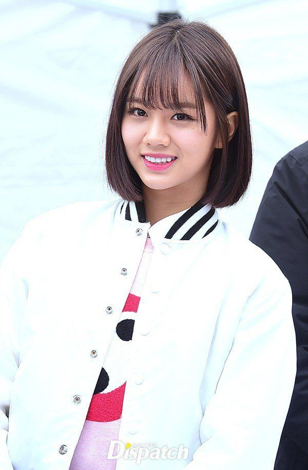
Belum banyak nih perempuan yang berani potongan model cepak yang identik dengan gaya maskulin. Tapi, model ini sudah mulai banyak digunakan oleh para fashionista lho guys...
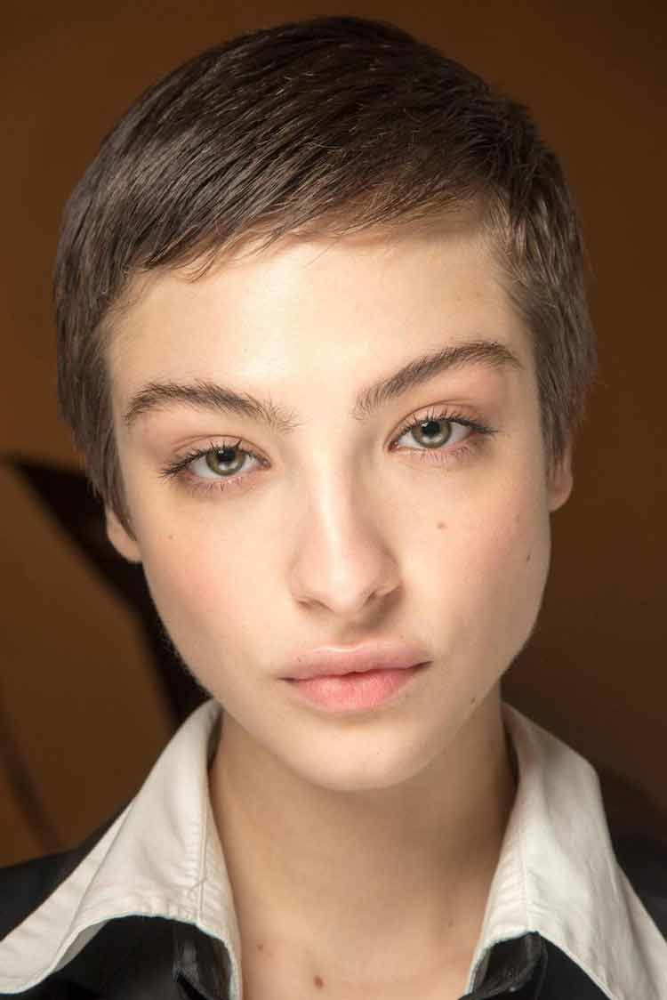
Sama dengan model cepak, model spike juga akan membuatmu terkesan maskulin. Tapi, kamu akan jadi terlihat keren dan manis disaat yang bersamaan.
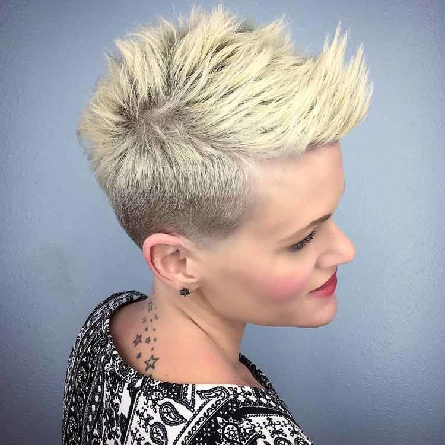
Untukmu Yang Punya Rambut Panjang ^_^ :3
Tidak perlu pusing dengan rambut tebal, coba potong rambutmu dengan gaya shaggy yang identik dengan layer panjang untuk membuatnya terlihat tidak ‘berat’.
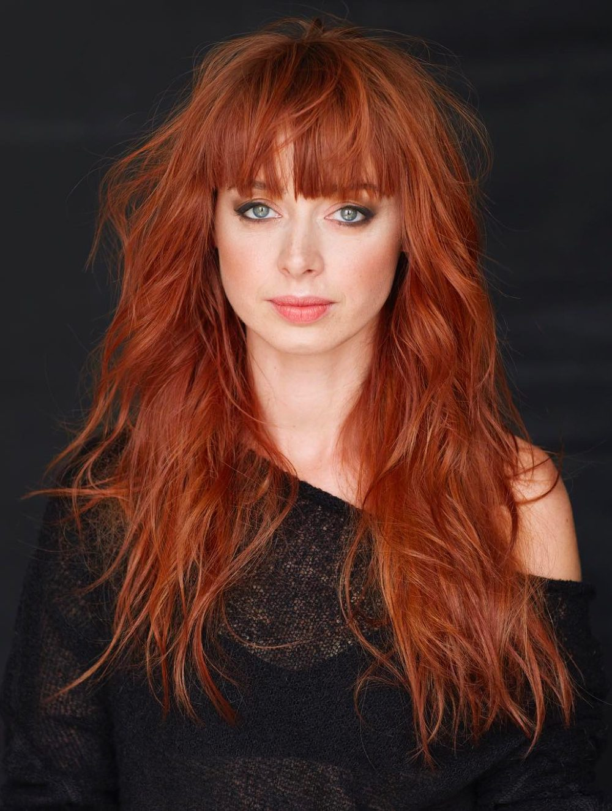
Ini adalah tujuan akhir bagi setiap wanita dengan rambut panjang yang menginginkan rambut yang ramping dan stylist, Perhatikan bagaimana lapisan terpendek hanya ada untuk membingkai wajah, selain itu, sebagian besar lapisan adalah panjang menengah.
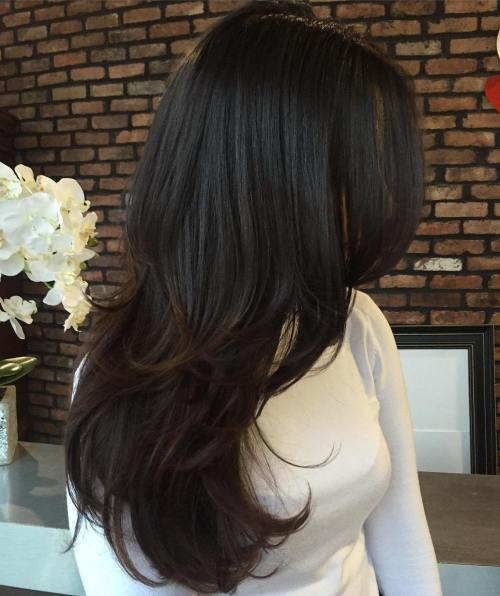
Gaya keriting bervolume ini cocok untuk rambut keriting alami maupun lurus, khususnya yang tipis dan berpotongan rata. Untuk menatanya, gulung rambut dalam bagian cukup besar menggunakan rol rambut atau curling wand berukuran medium atau besar. Trik ini akan menambah volume dan membuat rambut terlihat tidak lepek
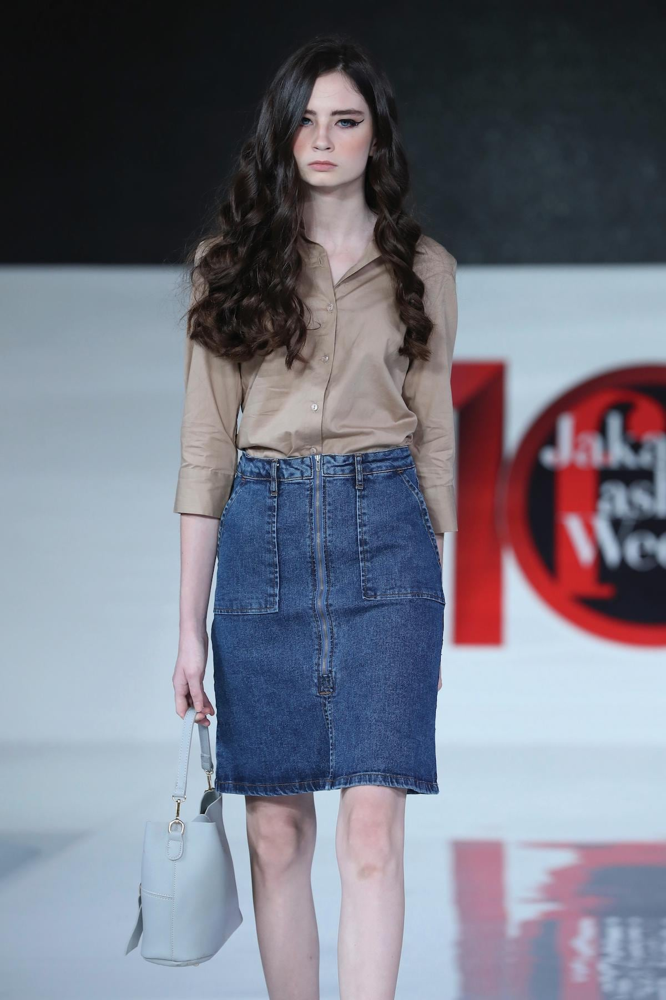
Banyak wanita yang sering menggunakan model gaya rambut ini, makanya model gaya rambut straight parted in the middle selalu menjadi model gaya rambut yang selalu terkenal. Selain itu banyak orang yang meilih untuk menggunakan model rambut ini karena sangat mudah untuk menatanya dan tidak perlu untuk pergi ke salon.
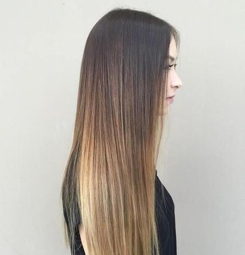
Jenis rambut ini yang paling sering kita jumpai. Lekukannya konsisten dari dekat akar rambut dan ukurannya cukup rapat. Cara menatanya cukup mudah. Sisir rambut dengan jari untuk membuat lekukannya lebih terurai.
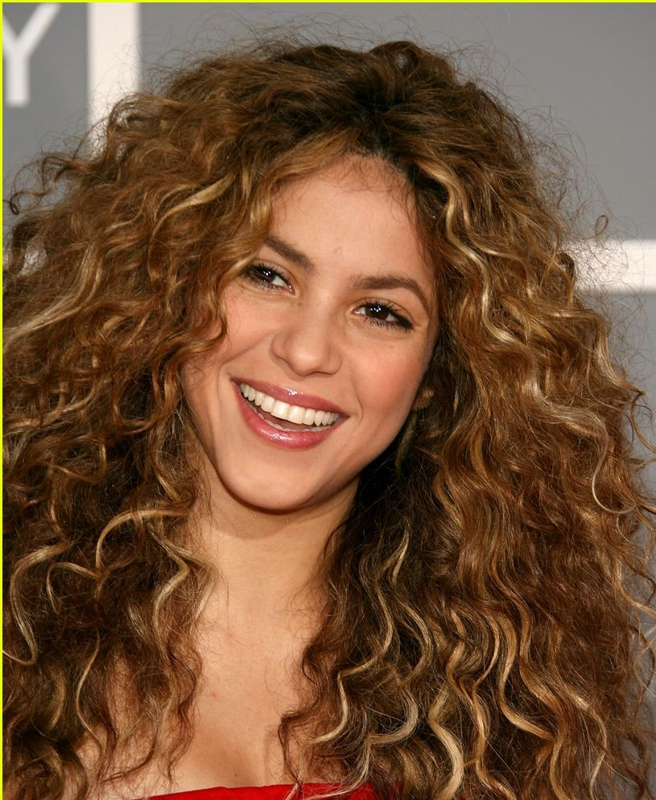
Model rambut panjang yang terakhir ini bisa dibilang cukup unik. Hal ini karena banyak orang yang mengatakan volume rambutnya menjadi mengembang. Biasanya model rambut yang seperti ini digunakan para wanita yang memiliki gaya rambut berukuran sedang .
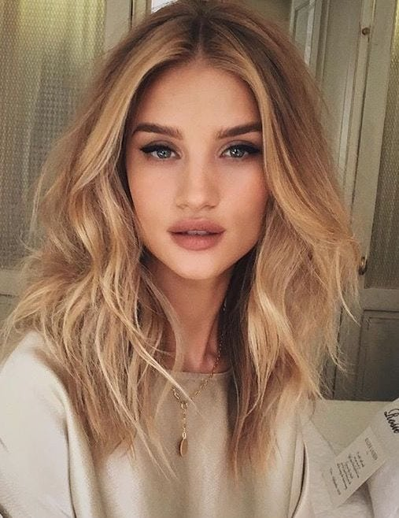
Gaya rambut beach wave merupakan gaya rambut yang di biasa didapatkan setelah dari pantai, gaya rambut ini sebenarnya jauh lebih cocok diterapkan untuk yang memiliki rambut panjang.
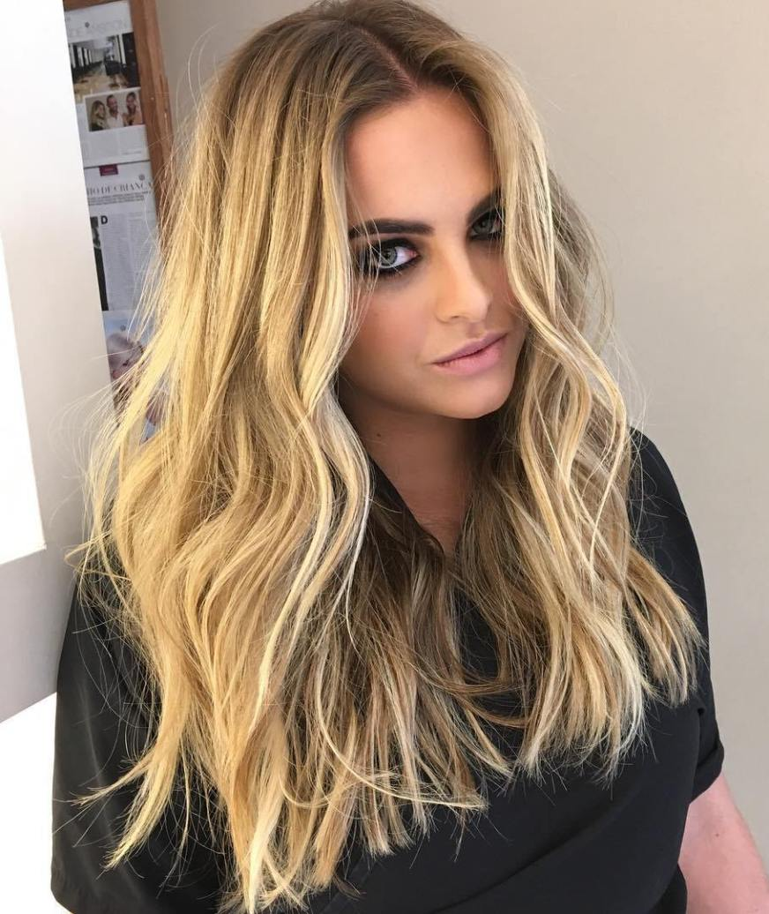
yang menjadi andalan dan tak lekang oleh zaman ialah model rambut pendek bervolume dengan poni depan.
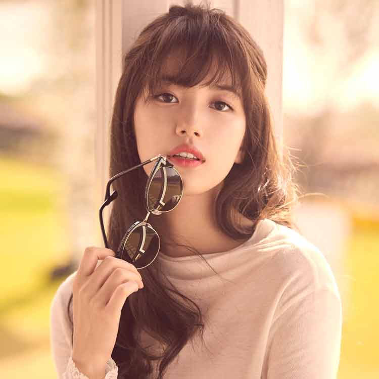
Curly menampilkan rambut sedikit keriting dan sedikit berantakan. Model rambut ini dapat diaplikasikan tanpa poni.
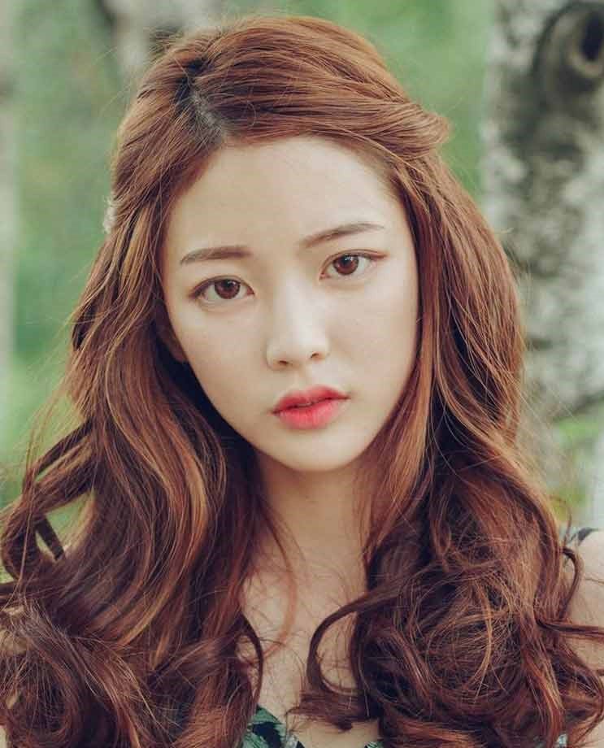
10 tren model rambut pendek
35 Model rambut panjang berponi untuk referensi gayamu selanjutnya
18 Model rambut panjang terpopuler pilihan All Things Hair
{kind=link}
{kind=link}
{kind=link}
{kind=link}
{kind=link}
{kind=link}
{kind=link}
{kind=link}
{kind=link}
{kind=link}
{kind=link}
{kind=link}
{kind=link}
{kind=link}
{kind=link}
{kind=link}
{kind=link}
{kind=link}
{kind=link}